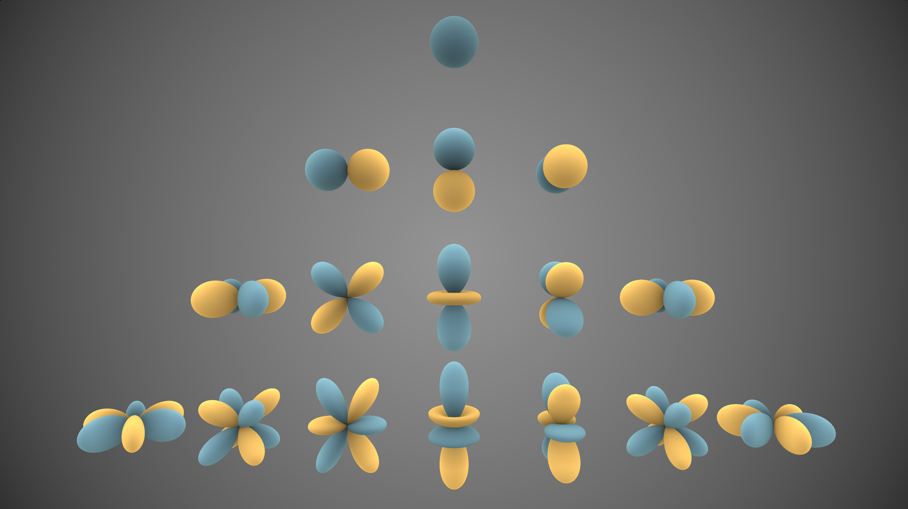

3D Gaussian Splatting for Real-Time Radiance Field Rendering
Prliminaries
3D Gaussian
Gaussians are defined by a full 3D covariance matrix \(\Sigma\) defined in world space centered at point (mean) \(\mu\).
Gaussian 中的协方差矩阵是一个正定矩阵, 一定可以进行对角化, 原文中将其表示为:
其中, \(R\)是一个旋转矩阵, 通过一个四元数表示, \(S\)是一个对角矩阵, 由对角线上的三个参数决定, 所以协方差矩阵共有七个参数.
几何上, 3D Gaussian 在空间中对应一个椭球.
Spherical Harmonics
类比于傅里叶级数, 我们选取一组球面函数作为基函数, 试图拟合一个复杂的表面.

当我们允许选取的基函数个数越多, 我们的拟合效果就越好.

- 球谐函数用于表达空间中某点的光照模型.
- 光照函数\(C(\theta, \phi)\)可以表示为球谐函数的加权线性组合，如下，某一个位置高斯球的函数，输入为角度，输出为这个角度的颜色:
其中, \(Y_l^m(\theta, \phi)\)为球谐函数, \(a_l^m\)为系数, 参数\(l\)和\(m\)分别为阶和次. 阶描述了函数在球面上的波纹数量, 次代表了在一定阶的前提下函数方位角的变化.
-
m由J决定，如J=3, m=-3,-2,-1,0,1,2,3, J =2 m = -2,-1,0,1,2 , 对应7+5+3+1=16个球谐函数，所以有16个系数a,RGB分别对应一个球谐函数线性组合，所以光照模型一共16*3=48个参数，这些参数就是需要优化的变量.
-
输入\((\theta, \phi)\)，确定J,那么球谐函数就是固定的，如下，带入\((\theta, \phi)\)，那么球谐函数就是一个个实数.
Perspective Projection

我们将世界坐标转换到相机坐标\((x_e, y_e, z_e)\)之后, 还需要使用透视投影将相机坐标转换到屏幕坐标\((x_s, y_s, z_s)\).
我们可以得到一个变换矩阵\(M_{\text{proj}}\), 作用在\((x_e, y_e, z_e)\)上, 得到屏幕坐标. 具体推到详见这篇博客.
因为变换后的屏幕坐标是二维的, 所以变换后的坐标\(z_s\)失去了意义, 但是其实我们可以令\(z_s = \sqrt{{x_e^2 + y_e^2 + z_e^2}}\)这一关系使得各个点在变换前后沿z轴的遮挡关系不变.
但是加上这一限制之后坐标变换变成了非线性的, 所以我们需要用Taylor展开通过一阶近似来拟合这一非线性变换.
首先将世界坐标转换为相机坐标:
这是一个线性变换, 变换后的结果仍然符合高斯分布:
接下来从相机坐标变换到像素坐标系, 我们使用一阶泰勒展开近似, 使得结果仍为Gaussian:
其中\(F\)为非线性变换, \(J\)为\(F\)的雅可比矩阵.
经过这样的两次线性变换, 我们得到了一个在像素坐标系下的二维Gaussian, 同时保留了其距离相机的深度信息.
Splatting and \(\alpha\) Blending
Splatting是一种光栅化（Rasterize）3D对象的方法，即将3D对象投影到2D图形。如将3D高斯球（也可以是其他图形）往像素平面扔雪球，在像素平面的能量从中心向外扩散并减弱。
光栅化之后怎么混合这些像素平面的椭球呢？使用α \alphaα blending，主要解决图层融合的问题。 以两幅图像为例，图像\(I\)的透明度为\(\alpha_1\), 图像\(I_{bg}\)的透明度为\(\alpha_2\), 所以二者融合的公式如下:
现在扩展到多张图, 我们有:
Pipeline

整个场景的表达依靠很多个Gaussian, 而每个Gaussian都由一系列参数描述, 具体而言, 在这篇论文中有59个参数.

- 中心\(\mu\): 3.
- 协方差矩阵\(\Sigma\): 7.
- 球谐函数系数\(a\): 48.
- 透明度\(\alpha\): 1.
每一个Gaussian的这些参数也正是我们通过Ground Truth和BackProp进行优化的目标.
Initialization
首先使用Struct from Motion从图像中估计空间点作为初始场景的描述, 每个点云位置放置一个Gaussian球, 中心点位置设置为点云位置, 其他信息随机初始化.
Projection
根据相机内外参数矩阵, 把Gaussian球Splatting到图像上. 当一个像素点在Gaussian球的概率为99%的范围内, 认为其被该Gaussian覆盖.
Diferentiable Tile Tasterizer
在投影重叠区域进行光栅化渲染（Differentiable Tile Rasterizer），使用α \alphaα blending，这是确定的函数，不需要学习。把这些高斯球进行混合，过程可微.
这部分原文将整张图像分成了很多tile, 然后可以并行处理.
Optimization
损失函数为:
其中:
- L1 Loss: 逐个像素比较差异
- SSIM loss（结构相似）损失函数：考虑了亮度 (luminance)、对比度 (contrast) 和结构 (structure)指标，这就考虑了人类视觉感知，一般而言，SSIM得到的结果会比L1，L2的结果更有细节，SSIM 的取值范围为 -1 到 1，1 表示两幅图像完全一样，-1 表示两幅图像差异最大.
每次求出Loss之后, 我们使用BackProp求出对于各个Gaussian球参数的梯度, 然后Gradient Descent更新参数.
Adaptive Density Control
学习过程中，较大梯度（59维导数，模长大）的高斯球存在under-reconstruction和over-reconstruction问题:

- under-reconstruction区域的高斯球方差小，进行clone
- over-reconstruction区域高斯球方差大，进行split
- 每经过固定次数的迭代进行一次剔除操作，剔除几乎透明（透明度接近0）的高斯球以及方差过大的高斯球